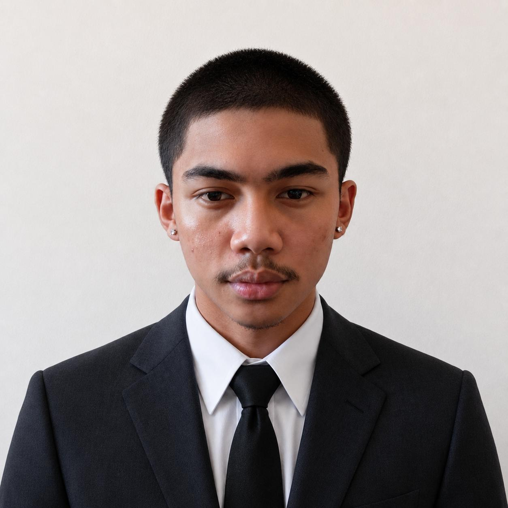

Who Am I?
My name is Egen Mark Piamonte. I am an Information Technology student with an interest in programming, web development, and technology.
I enjoy creating websites and applications while continuously improving my technical and problem-solving skills.
Education
I graduated from Senior High School under the STEM strand, and I am currently pursuing a Bachelor of Science in Information Technology (BSIT) degree.
My Goal
My goal is to become a skilled IT professional and web developer who can create useful and user-friendly digital solutions.